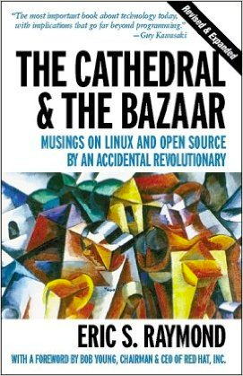
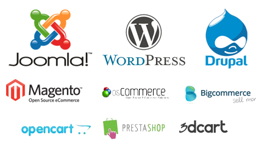
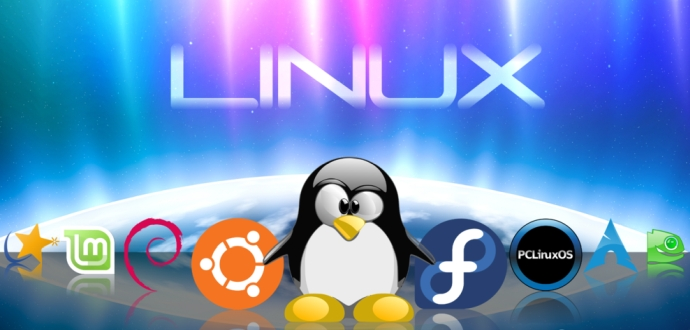
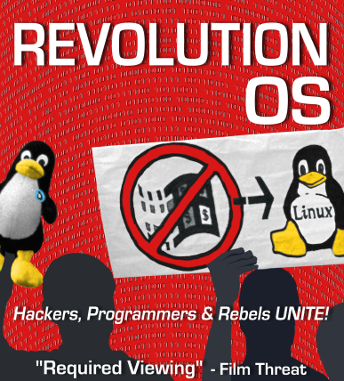
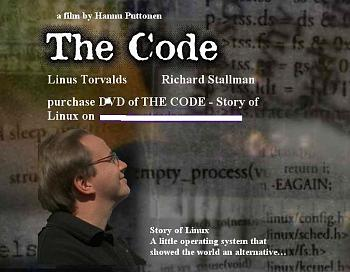

متن باز و تأثیر آن بر توسعه نرم افزار
سید علی اکبر معینی
شروع قضیه..
- تولید کامپیوتر و سیستم عامل های سفارشی و خاص
- اختراع زبان سی و سپس سیستم عامل یونیکس - 1969
-- تبادل نرم افزار ها ، کدها و دانش
- ماکروسافت و انتشار ویندوز بصورت کد بسته (1976)
- شروع دوران نرم افزار های انحصاری و کد بسته با پیشگامی ماکروسافت
- عدم ارائه کد های یونیکس (1979)
- ریچارد استالمن و شروع پروژه گنو (1984)
- مهم بودن آزادی کاربر / نرم افزار غیر آزاد = نرم افزار غیر اخلاقی
- تأسیس بنیاد و جنبش آزادی نرم افزار و GPL
- راه حل ؟؟
- تولید تمام قسمت های یک سیستم عامل (1991)
- انتشار کرنل لینوکس توسط لینوس توروالدز بصورت آزاد (1991)
GPL
- آزادی اجرای برنامه برای هر کاری
- آزادی مطالعه چگونگی کار برنامه و تغییر آن (پیش نیاز: متن برنامه)
- آزادی تکثیر و کپی برنامه
- آزادی تقویت و بهتر کردن برنامه و توزیع آن برای همگان
--- انتشار دوباره برنامه تحت مجوز GPL

- اریک ریموند و مقاله کلیسا و بازار
- تغییر نگرش صنعت نرم افزار نسبت به نرم افزار آزاد به عنوان یک روش موثر توسعه
- اولین گام NetScape در برابر IE
مزایای روش توسعه متن باز
- اختصاص افراد کمتر در پروژه
- کیفیت
- گزارش خطا ها
- امنیت و پایداری
- انعطاف پذیری
- قابلیت سفارشی سازی
- آزادی
- هزینه
- شفافیت
- کاربردی
- 88% سوپر کامپیوتر ها
- 498/500 سوپر کامپیوتر برتر
50 لینوکس - 30 بی اس دی - 20 ویندوز



